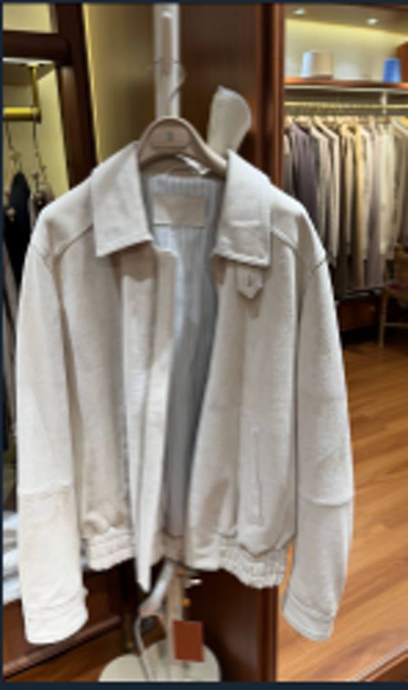
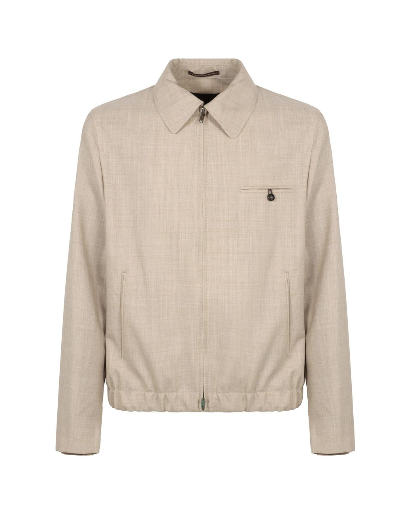
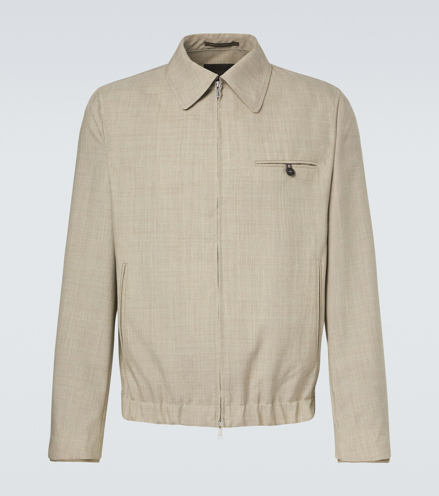
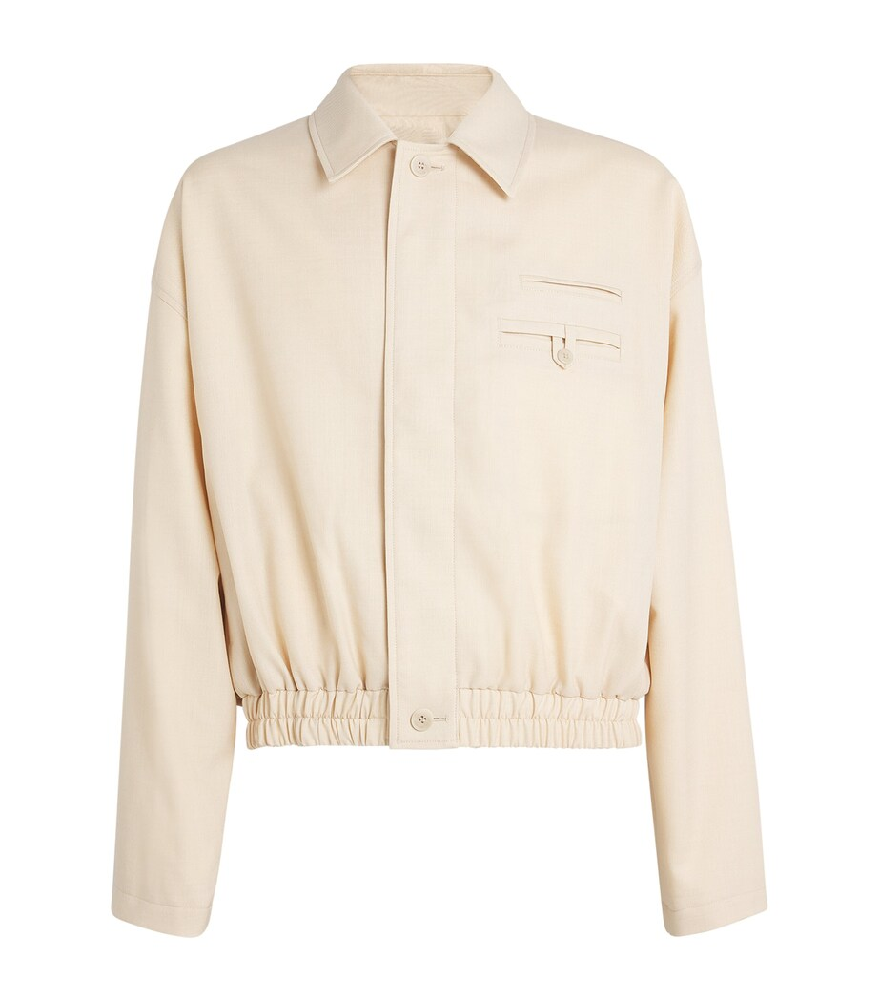

Точный товар не найден
Все три кандидата отклонены
GPT сформировал подробный запрос, но поиск ушёл в похожие шерстяные блузоны других брендов. Эти фотографии нельзя использовать для карточки товара.
- Пост
- Loro Piana · 100% шерсть · M–3XL
- Совпало
- Светлый цвет, воротник, короткий силуэт
- Не совпало
- Бренд, карманы, застёжка и конструкция низа
- Результат
- Ничего не публиковать; нужен повторный поиск